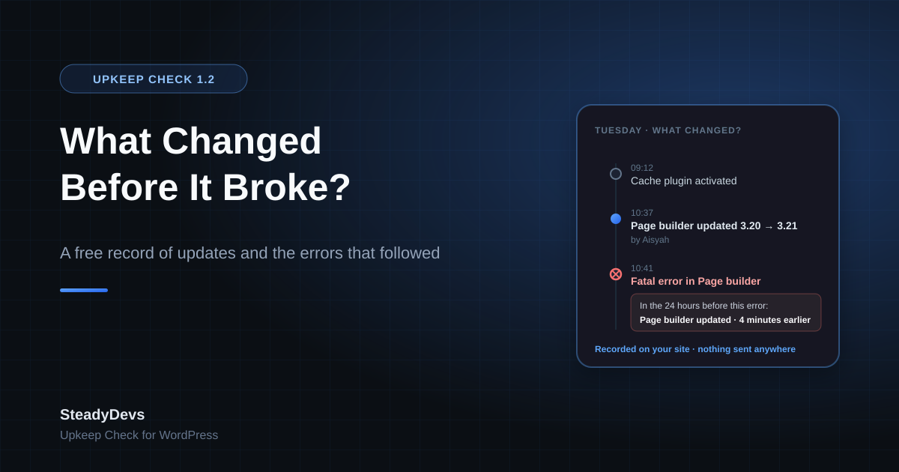

Your WordPress Site Broke After an Update. Which One?
The message arrives on a Monday morning: "Checkout stopped working over the weekend. Nobody touched anything."
Somebody did. WordPress ran an automatic plugin update at 3am. Your host moved the server to a newer PHP version. A colleague pressed Update All on Friday afternoon and went home. None of those people think of themselves as having "touched" the site, and none of them left a note.
So the person who has to fix it starts the way everyone does: deactivate plugins one by one and reload the page. On a site with forty plugins that is an afternoon, and it tells you what to switch off, not what to put back.
Why "what changed?" is the right first question
Most WordPress breakages are regressions. The site worked, something changed, the site stopped working. The change is nearly always one of a handful of things: a plugin or theme update, a plugin switched on or off, a WordPress core update, or a PHP version change on the server.
Once you know which change it was, the fix is usually a few minutes: roll the plugin back, deactivate it, or ask the host to put PHP back while the plugin's author catches up. The hard part isn't fixing. It's knowing where to look.
That is the same situation we see in legacy .NET and POS systems: the system that nobody understands any more is the one where nobody can say what changed last week. WordPress is just the most common place it happens.
What WordPress tells you, and what it doesn't
WordPress keeps surprisingly little of this. The Updates screen shows what is waiting to be updated, not what was updated and when. Site Health describes the current state, not how it got there. When a plugin crashes a protected page, recovery mode emails the admin and names the plugin, which is genuinely useful, but it only covers errors on the login page, the admin and a few other places. A fatal error on your checkout page sends no email.
The PHP error log is off by default, and when it is on it lives in a file most site owners never open. Activity-log plugins record who did what, but they live in a different screen from the errors, so joining the two is still your job.
What Upkeep Check 1.2 records
Version 1.2 of SteadyDevs Upkeep Check, our free WordPress plugin, adds a section called What changed? to its report. It keeps a record on your own site of:
- Plugin and theme changes: updates, installs, activations, deactivations and deletions, with the version before and after and who made the change.
- WordPress and PHP version changes, including ones made by your host. Changes made outside WordPress, over FTP or by a deployment tool, are picked up by an hourly comparison.
- Fatal errors, the kind that produce a white screen or "There has been a critical error on this website", with the message, the file and line, and the plugin or theme that file belongs to.
- Failed emails, with the mailer's error message. Never the recipient or the subject.
Next to the error, the changes before it
The part that saves the afternoon is how the two halves are shown together. Under every fatal error, the report lists the changes made in the 24 hours before it, with the change to the same plugin first:
10:41 — Fatal error in Page Builder Pro: Uncaught TypeError in page-builder-pro/includes/render.php:212
In the 24 hours before this error:
• Page Builder Pro updated from 3.20.1 to 3.21.0, by Aisyah (4 minutes earlier) the same plugin the error is in
• WP Super Cache activated, by Aisyah (1 hour earlier)
Notice what it doesn't say. It doesn't claim "87% confidence" that the update caused the error. It shows you that the error started four minutes after the update, in the plugin that was updated, and lets you draw the obvious conclusion. Where nothing changed in the 24 hours before an error, it says that too, which is just as useful: you can stop hunting for an update and look at the server instead.
When the site has had fatal errors in the past week, a red notice at the top of Tools → Upkeep Check says how many and where the latest one was, so you don't have to scroll to find out.
What it can't do
We would rather you knew the limits before you installed it than after.
- A fatal error is caught only if it happens after this plugin has loaded. An error in wp-config.php, or in a plugin that WordPress loads earlier in the alphabet, isn't recorded.
- Warnings, notices and deprecations are not recorded. They are too noisy to be useful on a live site, and recording them would slow it down.
- It isn't uptime monitoring. It records what happened on the site; it doesn't ping the site from outside to see if it's up.
- It covers one site. There is no dashboard across sites.
- It keeps 90 days and at most 500 events, in one option in your database. Nothing is sent anywhere, and deleting the plugin deletes the record.
The rest of Upkeep Check
What changed? sits next to what Upkeep Check already did. Press Check my plugins and it asks the WordPress.org directory about every installed plugin and theme, then tells you in plain words which ones are quietly becoming a risk:
- Closed on WordPress.org, with the date and the reason, such as "Security Issue". A closed plugin keeps running on your site and will never get a fix.
- Abandoned: no update in over two years. Over one year is flagged as worth a look.
- Untested with the version of WordPress you run, or with an update WordPress is holding back because your PHP is too old.
- Your PHP version, and the date it stops getting security fixes.
- Results also appear on the Plugins screen under each affected plugin, and in Tools → Site Health. An optional weekly check emails you only when something newly needs attention.
How to use it when something breaks
- Open Tools → Upkeep Check. If there have been fatal errors this week, a red notice says so at the top.
- Read the error in What changed? and the changes listed under it. A change to the same plugin, minutes before, is your first suspect.
- Roll that plugin back to its previous version, or deactivate it, and reload the page that was failing.
- If the error stops, you're done for now: tell the plugin's author, and keep the old version until they fix it. If it doesn't, move to the next change on the list.
- If nothing changed in the 24 hours before the error, ask your host what changed on the server. A PHP version change is recorded if WordPress saw it, but a server move or a memory limit change isn't.
Download SteadyDevs Upkeep Check
Free, open source, listed on WordPress.org. Every check and the full What changed? record, with no account, no limits and nothing sent off your site.
Get it on WordPress.orgIf you look after sites for other people, the same record is available from the command line: wp upkeep timeline prints the changes and errors, newest first, and --format=json feeds it into whatever you already use. The report page has a Clear history button for when you hand a site over.
And if what the record shows you is a plugin that keeps breaking and whose author has gone quiet, talk to us. Replacing a plugin a busy site depends on, without downtime, is the kind of work we do every week.
Frequently Asked Questions
No. The record is kept in one option in your WordPress database and is never transmitted. The only outside request Upkeep Check makes is to the WordPress.org directory when you run a plugin check, and that sends only each plugin's slug.
No. Something is written only when a change happens or a fatal error occurs, which on a healthy site is a few times a week. On an ordinary page load the plugin does nothing except register that it's there.
Not in this version. WordPress itself already reverts a plugin update that fails with a fatal error during the update. What changed? is for the more common case, where the update succeeds and the site breaks afterwards: it tells you which plugin to roll back, and you do it with the plugin's previous version or a rollback plugin.
Most likely it happened before Upkeep Check loaded: in wp-config.php, in a must-use plugin, or in a plugin WordPress loads earlier. It may also have been a warning or notice rather than a fatal error; those aren't recorded. The report page says so under the list.
Yes. It records changes to any plugin or theme and errors in any of them. A fatal error in a WooCommerce payment extension shows up with that extension's name, and the changes to it before the error.
Yes. Every feature, including What changed?, is in the free plugin under the GPL. There is no paid version.